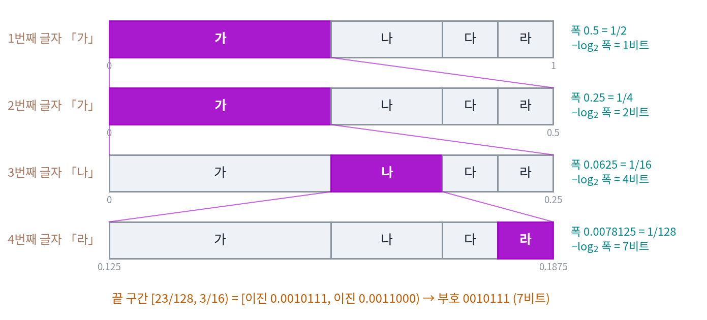

산술 코딩: 예측기가 그대로 압축기가 된다
허프만 코드는 말 하나에 코드 하나를 주므로, −log₂ 0.99가 0.014비트뿐인데도 확률 0.99로 맞히는 토큰에 적어도 1비트를 쓴다. 몇 개씩 묶으면 버리는 비트가 줄지만 코드표가 가짓수의 거듭제곱으로 커지고, 언어 모델처럼 다음 글자의 확률이 문맥마다 달라지면 표를 미리 만들어 둘 수도 없다. 글자마다 코드를 주지 않고 글 전체에 코드 하나를 주되, 그 코드를 글자마다 바뀌는 예측 확률만으로 만들어 낼 수는 없을까?
역사: 모델과 인코더를 떼어 놓기
1976년 IBM의 리사넨(Jorma Rissanen)과 스탠퍼드의 파스코(Richard Pasco)는 글자마다 바뀌는 확률로 글 전체의 코드를 만드는 문제에 따로따로 답했다. 글을 [0, 1)의 작은 구간 하나로 바꾸고 그 구간을 가리키는 비트를 내는 방법이다. 생각은 단순했지만 걸림돌이 있었다. 글이 길어질수록 구간이 한없이 좁아져, 그 끝을 적으려면 자릿수가 끝없이 늘어나는 수가 필요했다. 리사넨의 「일반화된 크래프트 부등식과 산술 코딩(Generalized Kraft Inequality and Arithmetic Coding)」는 이 계산을 정해진 자릿수의 기계 연산 안에서 해내면서도 손해를 아주 작게 묶는 방법을 보였다.
방법이 널리 쓰이게 된 것은 1987년 위튼(Ian Witten)·닐(Radford Neal)·클리어리(John Cleary)가 『Communications of the ACM』에 「데이터 압축을 위한 산술 코딩(Arithmetic Coding for Data Compression)」를 실으면서다. 그들은 바로 돌려 볼 수 있는 프로그램을 함께 싣고, 이 방법이 허프만 코드보다 더 짧게 줄이고 확률이 바뀌는 모델에서 더 빠르며, 무엇보다 확률을 내는 모델과 비트를 내는 인코더를 깨끗이 떼어 놓는다고 강조했다. 모델을 바꾸어 끼우기만 하면 인코더는 손대지 않아도 된다는 이 마지막 점이 「예측기가 그대로 압축기가 된다」는 말의 뜻이다.
「가가나라」를 구간으로 적기
다시 네 말 가·나·다·라와 믿음 q = (1/2, 1/4, 1/8, 1/8)로 해 보자. 가장 짧게 적는 법을 이미 아는 예로 시작하면, 새 방법이 그 답을 다시 내는지 확인할 수 있다. 처음 구간은 [0, 1)이다. 글자를 하나 받을 때마다 지금 구간을 믿음의 비율대로 네 칸(가, 나, 다, 라 순서)으로 쪼개고, 받은 글자의 칸을 다음 구간으로 삼는다.
- 첫 글자 「가」: [0, 1)의 앞 절반, [0, 1/2).
- 둘째 글자 「가」: [0, 1/2)의 앞 절반, [0, 1/4).
- 셋째 글자 「나」: [0, 1/4)을 1/2, 1/4, 1/8, 1/8로 나눈 둘째 칸, [1/8, 3/16).
- 넷째 글자 「라」: [1/8, 3/16)의 마지막 8분의 1, [23/128, 3/16).

끝 구간의 폭은 1/2 × 1/2 × 1/4 × 1/8 = 1/128이다. 받는 사람에게 이 구간을 알려 주려면, 구간 안에 완전히 들어가는 이진 소수 구간 하나를 골라 그 자릿수를 보내면 된다. 23/128 = 0.0010111(이진)이고 3/16 = 0.0011000(이진)이므로, 0.0010111로 시작하는 수는 모두 이 구간 안에 있다. 그래서 보낼 코드는 0010111, 7비트다. 허프만 코드표로 가 0, 가 0, 나 10, 라 111을 이어 붙여도 0010111이 된다. 확률이 모두 2의 거듭제곱일 때는 두 방법이 같은 답을 낸다.
받는 사람은 같은 믿음 q와 글자 수 4만 알면 된다. 0.0010111…은 [0, 1/2)에 있으니 첫 글자는 「가」, 그 안에서 다시 [0, 1/4)에 있으니 「가」로, 인코더와 같은 쪼개기를 그대로 따라가며 글자를 읽어 낸다.
확률이 2의 거듭제곱이 아니면 차이가 난다. 맑음 0.8, 비 0.2로 「맑맑맑비맑」을 적으면 구간 폭은 0.8, 0.64, 0.512, 0.1024, 0.08192로 줄고, 폭의 −log₂는 0.322, 0.644, 0.966, 3.288, 3.610비트로 쌓인다. 맑은 날 하나가 0.322비트씩, 정수로 올리지 않은 채 더해진다. 정수로 올리는 일은 맨 끝에 한 번만 하면 되므로, 글이 아무리 길어도 버리는 비트는 글 전체에서 많아야 2비트다.
이렇게 글자마다 예측 확률대로 구간을 쪼개 가며 글 전체를 구간 하나로 바꾸고, 그 구간을 가리키는 비트열을 코드로 내는 방법을 산술 코딩 (확률대로 구간을 좁히는 코딩, arithmetic coding)라 한다. 글자마다의 확률 q가 앞 글자들에 따라 바뀌어도, 쪼갤 때마다 그 글자 자리에서 예측기가 낸 q를 쓰기만 하면 된다.
−log₂ w는 −log₂ q를 글자마다 더한 값이다. 그러니 산술 코딩이 내는 비트 수는 예측기가 실제로 온 글자에 매긴 놀라움 −log₂ q의 합에 많아야 2비트를 더한 것이다. 다음 글자를 잘 맞히는 예측기는 그만큼 짧은 코드를 내는데, 인코더는 예측기가 내놓은 확률만 쓰고 그 확률이 어디서 왔는지는 묻지 않는다. 빈도를 센 표든, 앞 글자를 보는 표든, 수십억 개의 파라미터를 가진 신경망이든 확률을 내기만 하면 산술 코딩을 거쳐 압축기가 된다. 되살리면 원래 글과 한 글자도 다르지 않은 무손실 압축기다.
방향을 거꾸로 해서, 글마다 비트 수를 내는 압축기에서 시작하면 어떨까? 끊어 읽을 수 있는 코드라면 크래프트 부등식에 따라 모든 글의 2^(−ℓ)을 더해도 1을 넘지 않으므로, q(글) = 2^(−ℓ(글))은 확률처럼 쓸 수 있다. 짧게 줄이는 글일수록 높은 확률을 받는다. 다음 글자의 확률이 필요하면, 지금까지의 글 뒤에 글자마다 하나씩 붙여 줄여 보고 짧게 줄어드는 글자에 큰 확률을 주면 된다. 그러니 압축기도 예측기이고, 예측과 압축은 다음 기호의 확률이라는 한 가지를 두 방향에서 본 것이다.
ML에서: gzip 으로 글을 만들기
델레탕(Grégoire Delétang) 외 열한 명의 「언어 모델링은 압축이다(Language Modeling Is Compression)」(ICLR 2024)는 이 두 방향을 모두 실제로 돌려 보였다. 한 방향은 큰 언어 모델에 산술 코딩을 붙여 글, 그림, 소리를 줄인 것이고(그 수치는 다음 개념인 바이트당 비트와 함께 본다), 다른 방향은 바로 위에서 본, 압축기를 예측기로 쓰는 방향이다. 그들은 gzip 같은 압축기가 매기는 비트 수를 확률로 바꿔, 압축기 하나로 다음 기호를 뽑는 생성 모델을 만들 수 있음을 보였다. 압축 프로그램과 언어 모델이 둘 다 「다음 기호의 확률」이라는 같은 것을 다른 모습으로 담고 있다는 뜻이다.
문제 7. 도서관에서 책 찾기
도서관은 4층이고, 층마다 서가가 8개, 서가마다 칸이 16개다. (가) 모든 층, 서가, 칸에 책이 고르게 있다면 「몇 층, 몇 번 서가, 몇 번 칸」을 알리는 데 몇 비트가 드는가? (나) 1층에 전체 책의 절반이, 4층에 8분의 1이 있다고 하자(서가와 칸에는 고르게). 1층에 있는 책과 4층에 있는 책의 위치는 각각 몇 비트로 알릴 수 있는가?

(가)는 층 2비트, 서가 3비트, 칸 4비트니까 9비트요.

그걸 비율로도 말해 볼까요? 한 칸의 책은 도서관 전체 책 가운데 얼마를 차지하죠?

층에서 1/4, 서가에서 다시 1/8, 칸에서 1/16이니까 1/4 × 1/8 × 1/16 = 1/512예요. log₂ 512 = 9비트. 어, 민준이 답이랑 같네요.

나는 더했고 너는 곱했는데 왜 같아?
곱한 걸 로그로 바꾸면 더하기가 되니까. 범위를 좁힐 때마다 비율은 곱해지고 비트는 더해지는 거야.

(나)는… 층이 넷이니까 그래도 2비트 아니에요?

1층에 책이 절반 있으면, 「1층이에요」라는 말은 남은 후보를 얼마로 줄여 주나요?

절반으로요. 그럼 1비트네요. 1층 책은 1/2 × 1/8 × 1/16 = 1/256이라 8비트, 4층 책은 1/8 × 1/8 × 1/16 = 1/1,024라 10비트예요.

책이 많은 층은 짧게, 적은 층은 길게 알리는 거네요. 지금 구간을 비율대로 쪼개서 고른 칸으로 좁혀 가는 게 산술 코딩의 한 스텝이랑 같아요. 층, 서가, 칸이 글자 하나하나고요.

친구한테 위치를 알려 줄 때도 「학생회관 1층」처럼 다들 가는 곳은 한마디면 되는데, 처음 듣는 건물은 길게 설명해야 해요.
문제 8. 같은 비트, 다른 글
믿음 (가 1/2, 나 1/4, 다 1/8, 라 1/8)으로 글자마다 구간을 쪼개는 산술 코딩을 한다. (가) 「라라」와 「가가가가가가」의 끝 구간 폭과 코드 길이를 구하라. (나) 맑음 0.9, 비 0.1로 열흘의 날씨(맑은 날 아홉, 비 오는 날 하나)를 적는다. 끝 구간의 폭과 −log₂ 폭은 비 오는 날이 언제냐에 따라 달라지는가? 실제 코드는 몇 비트이고, 하루씩 허프만 코드로 적을 때보다 얼마나 짧은가? (풀어 본 뒤 위젯 1에 「라라」와 「가가가가가가」를 넣어 확인해 보자.)
「라라」는 1/8 × 1/8 = 1/64라서 6비트예요. 「가가가가가가」는 글자가 여섯이니까 더 길겠죠?
폭을 계산해 봐요.

(1/2)⁶ = 1/64… 똑같이 6비트네요. 글자가 세 배인데요.
드문 글자 둘이나 흔한 글자 여섯이나 구간을 좁히는 양이 같은 거야. 비트는 글자 수가 아니라 예측기가 얼마나 놀랐는지를 세.
(나)에서 비 오는 날이 첫날일 때와 마지막 날일 때, 끝 구간의 폭이 다를까요?
폭은 곱이라서 순서와 상관없이 0.9⁹ × 0.1 = 0.0387이고, −log₂ 폭은 4.690비트예요. 코드는 적어도 ⌈4.690⌉ = 5비트, 많아야 6비트고요.
계산기로 돌려 보니까 비가 첫날이거나 다섯째 날이면 5비트, 마지막 날이면 6비트예요. 폭은 같은데 왜 달라요?

코드는 끝 구간 안에 완전히 들어가는 이진 구간이어야 했죠. 폭이 같아도 구간이 [0, 1)의 어디에 놓이느냐에 따라, 들어가는 가장 큰 이진 구간의 크기가 달라져요. 그래서 끝에 1비트쯤 차이가 나요.

끝에서 생기는 1비트 차이는 글 전체에서 한 번뿐이에요. 하루씩 허프만 코드로는 열흘에 10비트를 써야 하는데, 산술 코딩은 5비트나 6비트예요. 맑은 날을 이틀씩 묶어도 평균 6.45비트인데, 묶지도 않고 그보다 짧아요.

수치해석 시간에 배운 반올림 오차랑 비슷하네요. 항마다 반올림해서 더하면 오차가 항 수만큼 쌓이는데, 다 더한 다음 한 번만 반올림하면 오차가 하나뿐이었어요.
문제 9. 받는 사람에게는 무엇이 있어야 하나
작은 언어 모델로 「오늘 / 날씨가 / 참 / 좋다」 네 토큰을 적는데, 모델이 정답 토큰에 준 확률은 차례로 0.5, 0.25, 0.9, 0.6이다. (가) 산술 코딩의 코드는 많아야 몇 비트인가? (나) 받는 사람이 이 비트열에서 문장을 되살리려면 무엇을 가지고 있어야 하는가? (다) 보내는 사람은 GPU에서, 받는 사람은 CPU에서 같은 모델을 돌려 확률이 소수점 아래 일곱째 자리에서 조금 달랐다. 무슨 일이 생길 수 있는가?
비트는 1 + 2 + 0.152 + 0.737 = 3.889니까, ⌈3.889⌉ + 1 = 5비트면 충분해요.
받는 사람은 그 5비트를 받아 무엇을 하죠?
인코더가 했던 대로 구간을 쪼개 가면서… 아, 쪼개려면 모델이 낸 확률이 있어야 해요. 첫 토큰을 읽고 나면 그걸 모델에 넣어서 둘째 토큰의 확률을 받고요.

그럼 받는 사람에게도 똑같은 모델이 있어야 해. 5비트만 받아서는 아무것도 못 하고, 모델 전체를 미리 가지고 있어야 하는 거야. 도서관 문제로 치면 층마다 책이 얼마나 있는지 적힌 안내판을 받는 사람도 들고 있어야 찾아가는 거고. 모델이 수십 기가바이트면 그걸 먼저 보내야 하고.
좋은 지적이에요. 문장은 5비트로 줄었지만, 받는 사람이 이미 가진 것이 아주 많다는 걸 잊으면 안 돼요. 이 비용을 어떻게 셈에 넣을지는 아직 열어 둡시다. (다)는요?

확률이 조금만 달라도 칸의 경계가 조금 옮겨지잖아요. 코드가 가리키는 점이 하필 경계 근처에 있으면 받는 사람은 다른 칸을 고르고, 그다음 토큰부터는 엉뚱한 문맥으로 계속 틀리겠네요.
한 번 어긋나면 뒤가 전부 무너지니까, 산술 코딩에서는 보내는 사람의 예측기와 받는 사람의 예측기가 비트 하나까지 똑같은 확률을 내야 해요. 이 책의 위젯과 스크립트가 확률을 정수 빈도로 바꿔 쓰는 것도 그 때문이고요.
조별 과제에서 다들 다른 버전의 파일을 고치면 나중에 합칠 때 다 꼬였어요. 받는 사람의 모델도 비트 하나까지 같은 버전이어야 하네요.